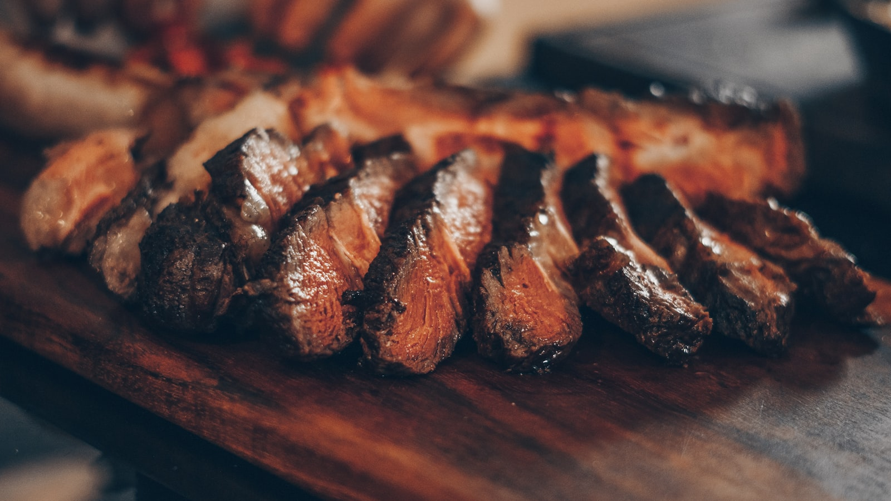

Parrilla
La entraña aparece en una reseña como “la mejor de la zona en porción y sabor”.

Entraña, chinchulines y una mesa tranquila para salir a comer bien hoy.
1.261 reseñasLo cuentan quienes fueron
“Excelente lugar para una buena entraña, la mejor de la zona en porción y sabor. Y los chinchulines exquisitos. Excelente atención.”Florencia Rodriguez
“Excelente la comida, excelente lugar, excelente la atención”, cuenta Karina Vero. El dato importa: es un lugar acogedor, tranquilo y familiar para quedarse a conversar.
Si querés pasar hoy, llamá antes. El teléfono, la dirección y el horario están a mano para que la decisión sea simple.
Llamar y consultarALTOS food concept
Lunes a domingo
9:00 a. m. – 12:00 a. m.
ALTOS es un restaurante en Belgrano 980, San Miguel. La propuesta que se puede confirmar por teléfono sale de lo que cuentan los clientes: parrilla, entraña, chinchulines, comida y atención. No hace falta adivinar la dirección ni el horario; quedan reunidos para que elijas cuándo pasar.
La valoración publicada es 4,5 sobre 5 con 1.261 reseñas. Nancy Chabria escribió “Excellent service and food.” y Karina Vero destacó un lugar acogedor, tranquilo y familiar. Son señales concretas para quien busca una mesa de barrio con clima de salida.
Primero llamás a ALTOS y contás si querés consultar antes de ir. Después confirmás el horario que te conviene. Por último coordinás cómo llegar a Belgrano 980. Este proceso mantiene la consulta directa y deja cada paso claro.
La foto principal acompaña los platos mencionados por las reseñas: entraña y chinchulines. Para conocer la mesa, el llamado es el contacto más directo.
El servicio de ALTOS se consulta por teléfono. Llamá, confirmá el horario y acercate a San Miguel.
Llamar y consultarLa dirección está publicada para ubicar el restaurante y el horario figura todos los días de 9:00 a. m. a 12:00 a. m. Si querés una consulta breve antes de salir, llamá y confirmá directamente.